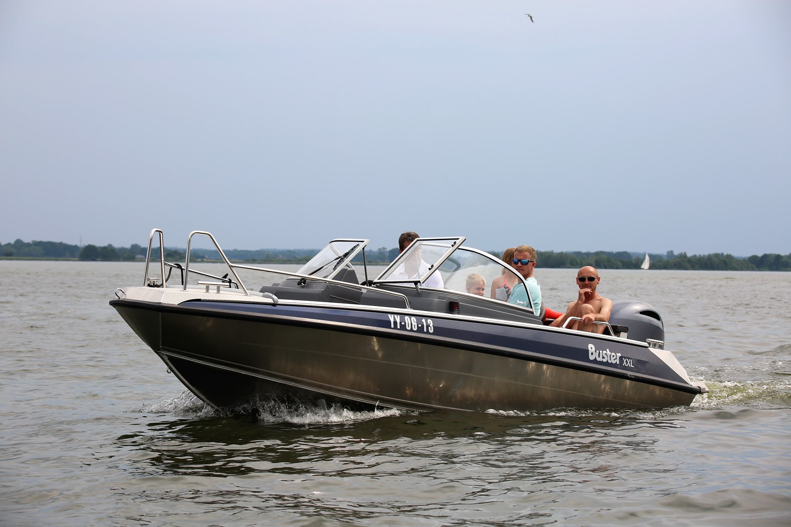

Keuzevak
Keuzevak 1
Huis en Hypotheek
Ik heb dit keuzevak gekozen omdat het handig is voor de toekomst als ik een huis ga kopen of huren. Met de informatie uit deze lessen kan ik later betere keuzes maken en snap ik de huizenmarkt beter.
Ik heb geleerd wat er komt kijken bij het huren of kopen van een huis en waarom de ene keuze soms handiger is dan de andere.
Keuzevak 2
Vaarbewijs
Ik heb dit keuzevak gekozen omdat het mij leuk lijkt om later een boot te kunnen besturen. Net als Huis en Hypotheek is dit keuzevak handig voor de toekomst.
Bij dit keuzevak heb ik geleerd wat het verschil is tussen een groot en klein schip, waar je op moet letten en hoe het verkeer op het water werkt.
